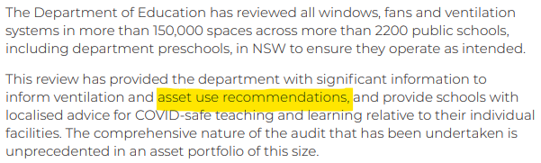
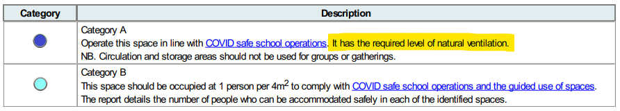
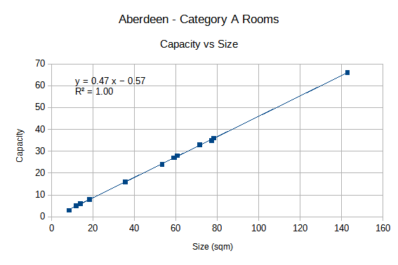
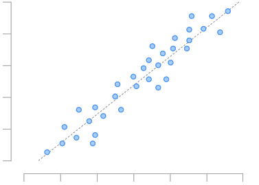

In 2021, the NSW government released a ventilation audit report for every public school in NSW.
Its ventilation audit fact sheet says:

I've examined the audit reports, and here's what I've found.
Firstly, every room has supposedly been audited and put into category A or B. The screenshot above, as well as the one below, suggests that the rooms are categorised based on their ventilation i.e. the audit happens first, and then the category is chosen. This is important to note.

However, I've checked the audits of 50-60 schools, and observed that:
This is weird. How can it be that every single classroom has met the requirements for Category A, and every single office area hasn't?
Anyway, it says in the key above that Category B spaces have a density limit of 1 person per 4 sqm. No density limit is specified for classrooms. This is important to note.
I decided to test out the relationship between room size and capacity (how many people are allowed). I randomly chose five schools and did a linear regression for each (found a best-fit line), using only Category A rooms. Here's just one example:

I got near-identical results for all five schools. They all have a coefficient of determination of 1.0. This means that 100% of the variation in room capacity can be predicted from room size. In other words, you don't need any other variables when guessing what the room's capacity might be. Wow.
Now for the Category B rooms. I divided the room size by 4 (the density limit stated in the audit key above) and rounded down to be conservative. This gave me the exact same capacity as the audit report for every single Category B room across the five schools. Again, this means that if you know the room size, you can guess the capacity correctly every time.
Having obtained a perfect relationship for Category B, I revisited Category A. The regression equation for each of the five schools varies just slightly, so I couldn't just choose one and apply it to the other schools to guess their capacities. I wanted a perfect (or near-perfect) relationship that I could apply to any school with great accuracy. Because the density limit worked so well with Category B, I decided to start by randomly choosing a density limit for Category A: 1 person per 2 sqm.
When I tried this, I got close, but I was still a bit off. So I did an embarrassing amount of trial and error before I obtained a relationship that worked for all five schools: To guess the capacity, you reduce the room size by 7.5% (to be conservative I guess), divide it by 2 (my randomly selected density limit), then round down.
This worked for 103 out of 106 rooms. For the 3 I got wrong, I was out by just 1.
To summarise the two formulas:
(Note that 'floor' just means to round down.)
To summarise how accurate these formulas are:
For the Category A rooms, why isn't the formula 100% accurate?
Well, I think the DoE applied a few extra rounding rules:
I spent a little bit of time trying to perfect the formula, but it's already close to 100% accurate, and it's never off by more than 1, so it wasn't really worth the effort for the amount of time it might have taken.
As noted earlier, the audit key implies that the categories were assigned as a result of the audit. But this cannot be true, because every single classroom is Category A and every single admin space is Category B. A real audit would have resulted in some mixing of categories, but I did not observe this in any of the 50-60 audits I checked, suggesting that the categories were assigned at the beginning.
The capacity of any room is directly derivable from the room size. The coefficient of determination (1.0) makes this irrefutable. A real audit would have resulted in some rooms having their capacities increased or decreased due to inoperable windows, good HVAC systems, etc. And this would have shown up on the above graph as data points scattered away from the line, like this:

If ventilation had any impact at all on the categorisation of the rooms, or their assigned capacities, then the relationship between room size and capacity would not have been perfectly linear, and the coefficient of determination would have been less than 1, indicating the presence of other factors besides room size. But nothing has been taken into account except for room size.
In publishing these pretend audits, the DoE has instilled a false sense of comfort in parents and staff, encouraging them to believe that their classrooms are safe. Without a real ventilation audit, involving CO2 monitoring and corrective measures like air purifiers, every teacher, teaching assistant and student is in imminent danger. This is not a hyperbolic, melodramatic, fearmongering or 'bed-wetting' statement; this is a statement of fact. No one can argue that the ventilation audits haven't been faked.
Overall, this is my theory about what really happened.
If you've made it all the way to the end of this page, thank you. And... I'm sorry. This is an awful discovery, and it brings me no joy - only sorrow - to be informing you of it.
Please visit Covid Safe Schools for information and support if you too believe that schools should be made safe, properly.